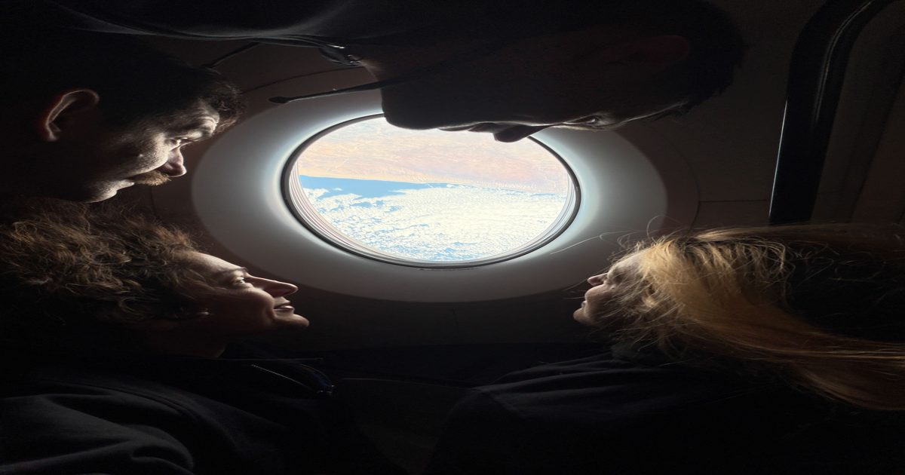

Домой: Экипаж SpaceX-12 НАСА завершает научную миссию станции
Миссия НАСА SpaceX Crew-12 завершается, и экипаж должен вернуться в начале октября.
Астронавты НАСА Джессика Меир и Джек Хэтэуэй, астронавт ЕКА (Европейского космического агентства) Софи Аденот и космонавт Роскосмоса Андрей Федяев отправятся домой с Международной космической станции после поддержки исследований, которые приносят пользу жизни на Земле и готовят людей к миссиям.